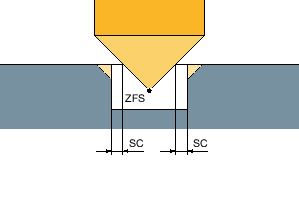

Beim Fräsen der Kreistasche können Sie diese Methode für folgende Bearbeitung wählen:
Schruppen
Beim Schruppen werden nacheinander von der Mitte aus die einzelnen Ebenen der Kreistasche bearbeitet, bis die Tiefe Z1 bzw. X1 erreicht ist.
Schlichten
Beim Schlichten wird immer zuerst der Rand bearbeitet. Dabei wird der Taschenrand im Viertelkreis angefahren, der in den Taschenradius einmündet. Bei der letzten Zustellung wird aus der Mitte heraus der Boden geschlichtet.
Schlichten Rand
Das Schlichten Rand erfolgt wie das Schlichten, lediglich die letzte Zustellung (Boden schlichten) entfällt.
Bei der Bearbeitungsart helikal kann zwischen mit - und ohne Eintauchen gewählt werden. Beim Fräsen der Kreistasche können Sie diese Methode für folgende Bearbeitung wählen:
Schruppen
Beim Schruppen wird die Kreistasche mit helikalen Bewegungen von oben nach unten bearbeitet.
Auf Taschentiefe wird ein Vollkreis ausgeführt, um Restmaterial zu entfernen.
Das Werkzeug wird von Taschenrand und Grund im Viertelkreis frei gefahren und mit Eilgang auf Sicherheitsabstand zurückgezogen.
Dieser Ablauf wiederholt sich schalenweise von innen nach außen, bis die Kreistasche komplett bearbeitet ist.
Schlichten
Beim Schlichten wird zuerst der Rand mit einer helikalen Bewegung bis zum Grund bearbeitet.
Auf Taschentiefe wird ein Vollkreis ausgeführt, um Restmaterial zu entfernen.
Der Boden wird spiralförmig von außen nach innen abgefräst.
Von der Taschenmitte wird mit Eilgang auf Sicherheitsabstand zurückgezogen.
Schlichten Rand
Beim Schlichten Rand wird zuerst der Rand mit einer helikalen Bewegung bis zum Grund bearbeitet.
Auf Taschentiefe wird ein Vollkreis ausgeführt, um Restmaterial zu entfernen.
Das Werkzeug wird von Taschenrand und Grund im Viertelkreis frei gefahren und mit Eilgang auf Sicherheitsabstand zurückgezogen.
| Hinweis |
|
Das Werkzeug muss für die Bearbeitung geeignet sein. Im Zweifelsfall muss ein Werkzeug mit "Stirnzahn über Mitte schneidend" verwendet werden. |
Beim Anfasen wird die Kante am oberen Rand der Kreistasche gebrochen.

Geometrien beim Anfasen von Innenkonturen
| Hinweis |
Der Schaftfräser verhält sich beim Anfasen wie ein Zentrierer mit einem Spitzenwinkel 90°. |
| Hinweis |
Beim Anfasen von Innenkonturen können folgende Fehlermeldungen auftreten:
|